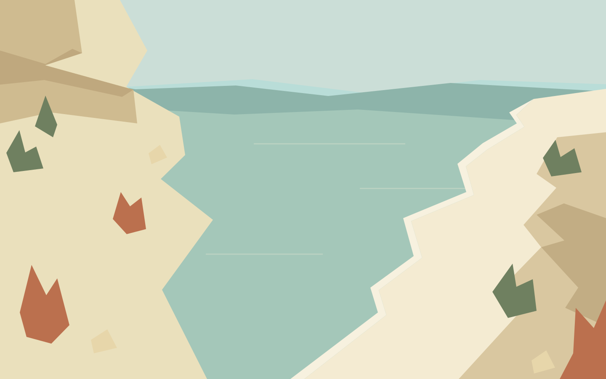

01Race interface · Prototype 01
Saltwind Run
A coastal race, a familiar voice,
and a few tricks for the road.
A little way to go.

01Race interface · Prototype 01
A coastal race, a familiar voice,
and a few tricks for the road.